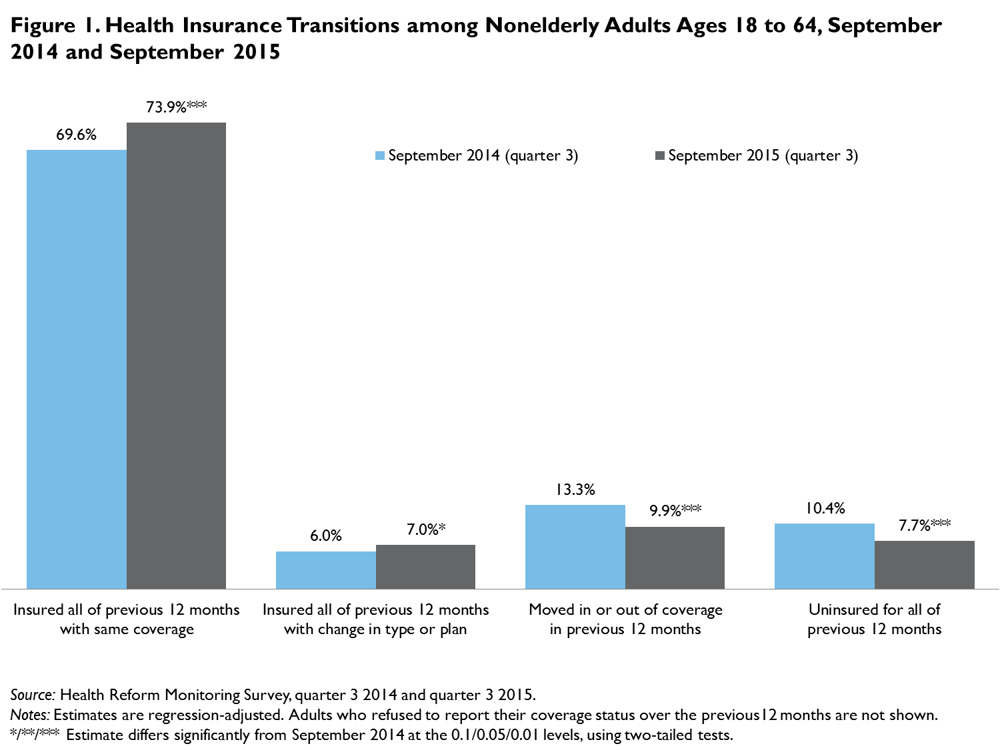

QuickTake: More Adults Have Stable Health Insurance Coverage as ACA Implementation Proceeds
Adele Shartzer and Sharon K. LongDecember 2, 2015
The insurance coverage expansions of the Affordable Care Act (ACA) are the most significant and far-reaching changes to insurance coverage availability in recent history. Relative to September 2013, just before the implementation of the ACA’s major insurance provisions, 14.3 million more adults have health insurance coverage as of September 2015 (Karpman and Long 2015). Even for insured adults, the availability of new insurance options under the ACA and new requirements for insurance plans and employers may lead to switching among health plans. Further, people may experience a change in their health insurance coverage for several other reasons, including a change in employment, a marriage or divorce, or a change in health status.
Sometimes the transitions in coverage are smooth, with no loss of continuity of coverage; in other cases people may experience periods of uninsurance as they transition. This phenomenon—sometimes called “churning”—could lead to delayed or forgone care, a lack of continuity of care, or administrative costs associated with searching for and enrolling in new coverage (Fairbrother 2005; Lavarreda et al. 2008; Strombom, Buchmueller, and Feldstein 2002; Summer 2006). Insurance coverage transitions could be beneficial for individuals who gain insurance after being uninsured or switch to a health plan that better meets their needs.
This QuickTake uses data from the September 2014 and September 2015 (quarter 3) waves of the Health Reform Monitoring Survey (HRMS) to describe the stability of health insurance coverage for nonelderly adults (those ages 18 to 64) over the 12 months before the survey, a period spanning the implementation of the ACA’s major insurance coverage provisions for the September 2014 sample. We present estimates of coverage stability for all nonelderly adults and by family income category. We draw on two questions in the HRMS that ask respondents about their health insurance coverage over the previous 12 months to create the four categories of insurance coverage transitions: (1) Adults who were insured all of the previous 12 months with the same type of coverage or health coverage plan (“stable coverage”); (2) adults insured for all of the previous 12 months who changed insurance type or health plan; (3) adults who moved into or out of insurance coverage in the previous 12 months; and (4) adults uninsured for all of the previous 12 months.
In both September 2014 and September 2015, the majority of adults reported they had stable health insurance coverage in the 12 months previous to the survey. Fully 73.9 percent of nonelderly adults reported stable health insurance coverage over the previous year in September 2015; 69.6 percent reported stable coverage in September 2014 (figure 1). Another 7.0 percent of adults in September 2015 said they were insured all 12 months but had a change in coverage type or health plan. Thus, over 80 percent of the adults were insured all of the previous year in September 2015.  The increase in coverage stability in September 2015 was particularly large for low-income adults (those with family income at or below 138 percent of the federal poverty level [FPL]) who were targeted by the Affordable Care Act’s Medicaid expansions. In September 2015, 56.6 percent of low-income adults reported they were insured with the same coverage for all 12 months, a 10.8 percentage-point increase from September 2014 (figure 2). In the 12 months before September 2014, a period when the ACA’s Medicaid expansion took effect in many participating states, 25.8 percent of low-income adults reported moving into or out of coverage; in September 2015, the share of low-income adults moving into or out of coverage decreased to 18.4 percent.
Despite this shift toward more stable insurance coverage, low-income adults remained far less likely to have stable coverage than adults with higher family income (figure 3). In September 2015, nearly all adults (87.1 percent) with family income of 400 percent of FPL or higher had stable coverage over the previous 12 months, compared with 56.6 percent of low-income adults. Over 7 in 10 (74.4 percent) adults with moderate incomes (those with family income between 138 and 400 percent of FPL, the income range targeted by subsidies for coverage through the Marketplace) had stable insurance coverage over the previous year.
With the significant changes in the health insurance market over 2014 under the ACA, the share of adults with stable insurance coverage over the previous year increased: over 80 percent of adults were always insured over the year. Coverage stability also improved for low- and moderate-income adults targeted by the ACAs coverage expansions, but 17.5 percent of low-income adults and 6.7 percent of moderate-income adults reported persistent uninsurance in September 2015, and 18.4 and 9.9 percent, respectively, had periods of uninsurance over the year (data not shown). Although low-income adults have had the greatest reductions in uninsurance following the implementation of the ACA’s key coverage provisions (Cohen and Martinez 2015; Karpman and Long 2015), not all have benefited from those gains. Efforts to improve the stability of insurance coverage for low- and moderate-income adults requires a better understanding of the patterns of and reasons for the coverage transitions; additional analyses using cross-sectional and longitudinal panel surveys, as well as qualitative methods, can enhance this understanding and improve stability of insurance coverage.
Methods: Each round of the HRMS is weighted to be nationally representative. We use these weights and a regression adjustment1 to control for differences in the demographic and socioeconomic characteristics of the respondents across the different rounds of the survey. This allows us to remove any variation in insurance coverage caused by changes in the types of people responding to the survey over time rather than by changes in the health insurance landscape. The basic patterns shown for the regression-adjusted measures are similar to those based on simple weighted estimates. In presenting the regression-adjusted estimates, we use the predicted rate of insurance stability in each quarter for the same nationally representative population. For this analysis, we base the nationally representative sample on survey respondents from quarters 1 and 3 of 2014 and quarters 1 and 3 of 2015).
We made several changes to the design of the HRMS and our analytic approach in September 2015. In addition to shifting from a quarterly fielding schedule to a semiannual schedule after March 2015, we changed the sampling method. For the September 2015 round, we designed the survey to yield a sample of at least 2,000 adults in each of three income groups (at or below 138 percent of FPL, 139 to 399 percent of FPL, and at or above 400 percent of FPL) and two state groups (those that had expanded Medicaid as of January 2014 and those that had not expanded Medicaid as of January 2014). Survey weights were adjusted to ensure estimates are representative of the national nonelderly adult population.
In September 2015, we also shifted to a more parsimonious regression model to better support subgroup analyses. Specifically, we collapsed detailed categories for some covariates and dropped some interaction terms. Given the switch to a semiannual survey, we now use data from quarter 1 and quarter 3 2014 and quarter 1 and quarter 3 2015 to predict uninsurance rates for the same nationally representative population rather than data from the most recent 12-month period. These changes had little effect on the regression-adjusted estimates.
References
Fairbrother, Gerry. 2005. “How Much Does Churning in Medi-Cal Cost?” Los Angeles: California Endowment.
Karpman, Michael, and Sharon K. Long. “QuickTake: Taking Stock: Gains in Health Insurance Coverage under the ACA Continue as of September 2015, but Many Remain Uninsured.” Washington, DC: Urban Institute.
Lavarreda, Shana Alex, Melissa Gatchell, Ninez Ponce, Richard E. Brown, and Y. Jenny Chia. 2008. “Switching Health Insurance and Its Effects on Access to Physician Services.” Medical Care 46 (10): 1055–63.
Cohen, Robin A. Cohen and Michael E. Martinez. 2015. “Health Insurance Coverage: Early Release of Estimates From the National Health Interview Survey, January–March 2015.” Washington, DC: US Department of Health and Human Services, National Center for Health Statistics,Division of Health Interview Statistics.
Strombom, Bruce, Thomas Buchmueller, and Paul Feldstein. 2002. “Switching Costs, Price Sensitivity, and Health Plan Choice.” Journal of Health Economics 21 (1): 89–116.
Summer, Laura. 2006. “Administrative Costs Associated with Enrollment and Renewal for the Medicare Savings Programs: A Case Study of Practices in Minnesota.” New Brunswick, NJ: Rutgers Center for State Health Policy.
Vistnes, Jessica, and Steven B. Cohen. 2015. “Transitions in Health Insurance Coverage over Time, 2012-2014 (Selected Intervals): Estimates for the U.S. Civilian Noninstitutionalized Adult Population under Age 65.” MEPS Statistical Brief #467. Rockville, MD: Agency for Healthcare Research and Quality.
About the Series
For more information on the HRMS and for other QuickTakes in this series, visit www.urban.org/hrms.
About the Authors
Adele Shartzer is a research associate and Sharon K. Long is a senior fellow in the Urban Institute’s Health Policy Center.
The authors gratefully acknowledge the suggestions and assistance of Stan Dorn, Katherine Hempstead, Michael Karpman, Genevieve Kenney, and Stephen Zuckerman.
Notes 1 Specifically, we control for the variables used in the poststratification weighting of the KnowledgePanel (the Internet-based survey panel that underlies the HRMS) and the poststratification weighting of the HRMS. These variables are sex, age, race and ethnicity, language, education, marital status, whether any children are present in the household, household income, family income as a percentage of FPL, homeownership status, Internet access, urban or rural status, and census region. In this analysis, we also control for citizenship status and participation in the previous quarter’s survey (i.e., whether the responded completed survey in the previous quarter, was sampled in the previous quarter but did not complete survey, or was not sampled in the previous quarter).
|

 |
 |
 |